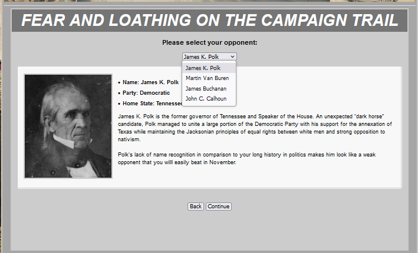
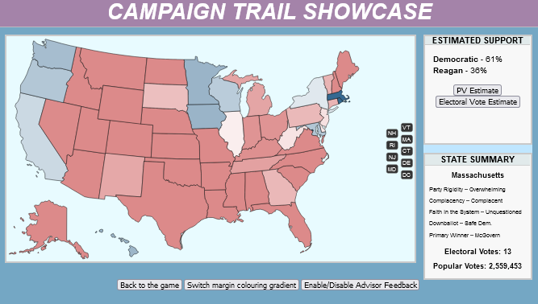

BLOG
PROGRESS REPORT #1
Hey guys, to start off this blog I want to show you some work on my two big projects right now. McGovern 1984 and 1844 Redux (or Fear and Loathing 1844)
Here's a show of something I'm adding to the Clay side of 1844 Redux, which as you may know, will be releasing after the Democratic sides.
Credit to Jet for coding this. I'm hoping this find of a kind choose-your-opponent screen will be a good counterpart to the large amount of work I'm putting
into the Democratic side, to have all 4 sides playable. Likewise, unless the NCT team works on integrating this into their site, this may be a CTS exclusive.
Second of all, I want to show you the McGovern 1984 starting map; which takes place before McGovern has actually been nominated.
The issues and starting margins have all been finished, even including alternate primary winners in this timeline. As you can see, even before McGovern's nomination,
the Democrats have an uphill battle.
Custom TCT code retrieval system 1.0
created by /u/astrohunch_o
Campaign Trail Showcase and direct integration into this website
created by Jet